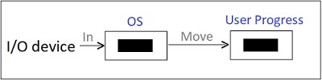

1. Single buffer
- It is simple type Of approach supported by operating system. If devices are block-oriented then the input is first transferred in system buffer from where process moves this block in user space and immediately issues the request for another block.
- This is done to improve speed up so that next block will be available immediately as access made to the data usually in sequential manner.
- Same is carried out for output transfer. In this transfer data is read from user space to system buffer.

2. Double Buffer
- Instead of single buffer, in this scheme two system buffers are supported by operating system. User process now make transfer to and from one buffer and at the same time OS can empty or fill other buffer. It is improved technique over single buffer but complexity also increases.
- In case of stream-oriented input, for line-at-a-time I/O, the user process need not to be suspended for input or output, unless the process runs ahead of the double buffers. For a byte-at-a-time operations,the double buffer offers no particular benefit over single buffer of twice length.

3. Circular buffer
- If process carries out fast burst of I/O then double buffers are not enough. More than two buffers are needed. We can achieve performance of process with more than two buffers.
- Collection of more than two buffers is called circular buffer.